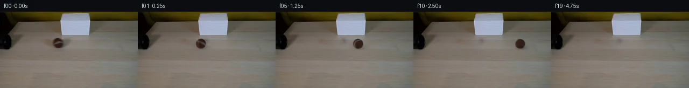

![首帧]()

Round 00
2026-11-05T16:27:56.694739+00:00像素候选变化代码 +207/−0inspection 更新
pixels 7701a1dbfaa33aeb · code 7144967e4c6bc813
查看本轮 generate.py 真实 diff
--- previous/generate.py
+++ current/generate.py
@@ -0,0 +1,207 @@
+"""Deterministic local pixel continuation; no external generation engines."""
+from pathlib import Path
+import json
+import numpy as np
+from PIL import Image, ImageDraw
+from scipy.ndimage import map_coordinates, gaussian_filter
+from scipy.sparse import lil_matrix
+from scipy.sparse.linalg import spsolve
+import artifact_io
+
+ROOT = Path(__file__).resolve().parent
+TMP = ROOT / '.tmp'
+TMP.mkdir(exist_ok=True)
+SOURCE = np.asarray(Image.open(ROOT / 'first_frame.png').convert('RGB'))
+H, W = SOURCE.shape[:2]
+CX, CY, RADIUS = 107.8, 59.7, 9.25
+SPEED, FPS, SS = 36.0, 4.0, 4
+
+
+def smoothstep(a, b, x):
+ t = np.clip((x-a)/(b-a), 0.0, 1.0)
+ return t*t*(3.0-2.0*t)
+
+
+def restore_table():
+ """Poisson clone nearby same-row wood grain inside the ball/shadow region."""
+ src = SOURCE.astype(float)
+ yy, xx = np.mgrid[:H, :W]
+ domain = ((xx-105.5)/23.5)**2 + ((yy-61.3)/15.7)**2 < 1
+ domain &= yy >= 46
+ # The source offset lies on unobstructed wood below/right of the shade.
+ guide = src[:, np.minimum(np.arange(W)+48, W-1)]
+ ids = np.full((H, W), -1, dtype=int)
+ coords = np.argwhere(domain)
+ ids[domain] = np.arange(len(coords))
+ matrix = lil_matrix((len(coords), len(coords)), dtype=float)
+ rhs = np.zeros((len(coords), 3), dtype=float)
+ for i, (y, x) in enumerate(coords):
+ matrix[i, i] = 4
+ for dy, dx in ((-1, 0), (1, 0), (0, -1), (0, 1)):
+ ny, nx = y+dy, x+dx
+ rhs[i] += guide[y, x]-guide[ny, nx]
+ if domain[ny, nx]:
+ matrix[i, ids[ny, nx]] = -1
+ else:
+ rhs[i] += src[ny, nx]
+ out = src.copy()
+ out[domain] = spsolve(matrix.tocsr(), rhs)
+ return np.clip(out, 0, 255)
+
+
+BACKGROUND = restore_table()
+Image.fromarray(np.rint(BACKGROUND).astype(np.uint8)).save(TMP / 'restored_table.png')
+
+# Fit stationary illumination to the observed brown pixels of the sphere.
+yy, xx = np.mgrid[:H, :W]
+nx0, ny0 = (xx-CX)/RADIUS, (yy-CY)/RADIUS
+nz0 = np.sqrt(np.maximum(0, 1-nx0*nx0-ny0*ny0))
+valid = nx0*nx0+ny0*ny0 < .76
+valid &= (SOURCE[:, :, 0] > SOURCE[:, :, 1]*1.17)
+valid &= SOURCE[:, :, 0] < 100
+features = np.stack([np.ones((H, W)), nx0, ny0, nz0], axis=-1)
+LIGHT = np.linalg.lstsq(features[valid], SOURCE[valid].astype(float), rcond=None)[0]
+BASE = LIGHT[0] + LIGHT[3]*.72
+lightmap = features @ LIGHT
+# The visible hemisphere supplies its coloration and the exact photographed seam.
+# De-light it so the table light stays fixed as the ball rotates.
+ALBEDO = np.clip(SOURCE.astype(float)-lightmap+BASE, 0, 255)
+
+
+def rotate_inverse(normals, angle):
+ axis = np.array([0., .55, np.sqrt(1-.55**2)])
+ c, s = np.cos(angle), np.sin(angle)
+ dot = np.einsum('...i,i->...', normals, axis)[..., None]
+ return normals*c - np.cross(axis, normals)*s + axis*dot*(1-c)
+
+
+def surface(normals, angle):
+ """Reproject photographed front material; extend hidden brown/seam analytically."""
+ body = rotate_inverse(normals, angle)
+ bx, by, bz = body[..., 0], body[..., 1], body[..., 2]
+ longitude = np.arctan2(bz, bx)
+ # A closed wavy seam on the unseen side follows the observed front's curvature.
+ seam_dist = by - (-.08+.33*np.cos(2*longitude+.75))
+ seam = np.exp(-.5*(seam_dist/.087)**2)
+ # Fine deterministic, low-contrast mottling on the previously unseen hemisphere.
+ noise = (np.sin(31*bx+17*by+11*bz)*np.sin(23*bz-9*by)
… diff truncated; 120 more lines …